Minara Harness 完全ガイド
Linux 版 1.0.1 の全画面を実機スクリーンショットで徹底解説
「Claude Code の金融版ハーネス」と紹介されていた Minara Harness を、Grok Bot 用に用意していた Linux VM に同居させてみました。最初のログインで画面が真っ白になるところから始まり、直したあとは全画面をスクリプトで撮り切りました。チャットモデルを GPT 6 Astra へ切り替える手順から、Autopilot（自動売買）で実際に戦略を走らせる画面、全 10 項目の設定内容まで、その実機スクリーンショットとともに追っていきます。
0. はじめに: Grok Bot の VM に入れてみた
手元には、Grok Bot という AI エージェントを動かすための Linux VM が 1 台あります。実体は Debian 13 の Docker コンテナで、X11 デスクトップを VNC 越しに使う構成です。もともと GUI アプリを動かす前提の箱ではありません。そこに「Claude Code の金融版ハーネス」と紹介されていた Minara Harness を同居させたらどうなるか気になり、試してみることにしました。macOS 版を紹介する記事は見かけましたが、Linux 版の画面をひととおり並べた記事は見当たりませんでした。
Linux 用の .deb（1.0.1、711 MB）を入れて Minara を起動すると、ログイン直後に画面が真っ白になって落ちました。原因はコンテナの /dev/shm が 64 MB しかなく、レンダラーが net::ERR_INSUFFICIENT_RESOURCES を出して死んでいたことです。--disable-gpu では直らず、--disable-dev-shm-usage（サンドボックスがない環境なので --no-sandbox も併用）で直りました。詳しい手順は 9 章にまとめています。
この VM のデスクトップは Grok Bot が使っているため、マウスで 1 画面ずつクリックして撮っていくわけにはいきません。そこで Electron の DevTools ポート（Chrome DevTools Protocol）に Python からつなぎ、画面遷移とスクリーンショットの取得をすべてスクリプトにまかせました。この記事はその過程で撮った 40 枚を、画面ごとに整理したものです。1 章から順に見ていきます。
1. Minara Harness とは？「ローカル金融エージェント」と npm CLI の違い
Minara Harness は、手元の PC 上で動くデスクトップアプリ（Electron 製）です。起動すると内部で AI エージェントとローカルゲートウェイが立ち上がり、次の機能を 1 つのウィンドウの中で完結させます。
- 市場リサーチ・チャット
- 戦略のバックテストと自動運用（Autopilot）
- 定時バッチ・監視の自動化
- 分析ダッシュボードの生成
- 接続ウォレットのポートフォリオ管理
Claude Code がコード生成のための実行基盤（ハーネス）であるのに対し、Minara Harness は市場調査から注文執行までを担う金融特化のエージェント基盤といえます。
混同しやすいのが、同じ Minara が提供する npm パッケージの minara CLI です。こちらは Minara サーバーへコマンドを送る軽量クライアントで、現物スワップ（18 チェーン）や Hyperliquid の無期限先物（perps）注文を端末から打つためのものです。ログイン情報の保存先も含めて Harness とは別物であり、この記事で扱うのは Harness のみです。
Harness の思考エンジン（モデル）は差し替えられます。標準は Minara 独自モデル（auto）ですが、設定で ChatGPT アカウントを OAuth 連携すると、GPT 6 Astra を含む OpenAI 系のモデルがチャットの選択肢に加わります（手順は 3 章）。Anthropic や OpenRouter の API キーも設定可能です。
2. 画面構成: メインメニュー 6 項目、More 配下 4 項目、設定 10 項目
起動直後の画面が Office です。左ペインに Office / Chat / Coding / Strategies / Automations / More の 6 項目が並び、Portfolio と Markets は More の配下にあります。macOS 版の紹介記事とはメニューの並びが異なるため、先に全体の構成を押さえておきます。
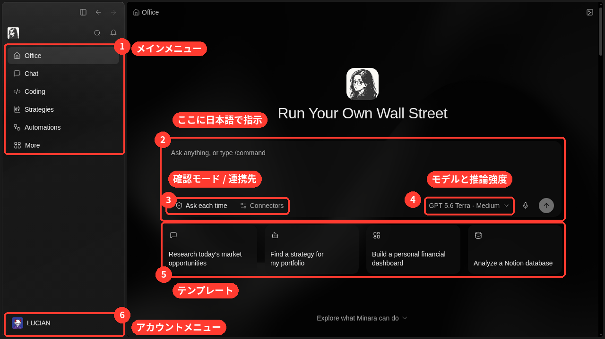
- メインメニュー（6 項目）
- 指示入力欄（日本語入力に対応）
- 実行制御設定（「Ask each time」はタスク実行前に都度承認を求めるモード。「Connectors」は外部サービス連携）
- 現在選択中のモデルおよび推論強度（クリックで変更可能）
- プロンプトテンプレート（市場調査、戦略探索、財務ダッシュボード、Notion 連携など）
- アカウントメニュー（ここから設定画面を開くことも可能）
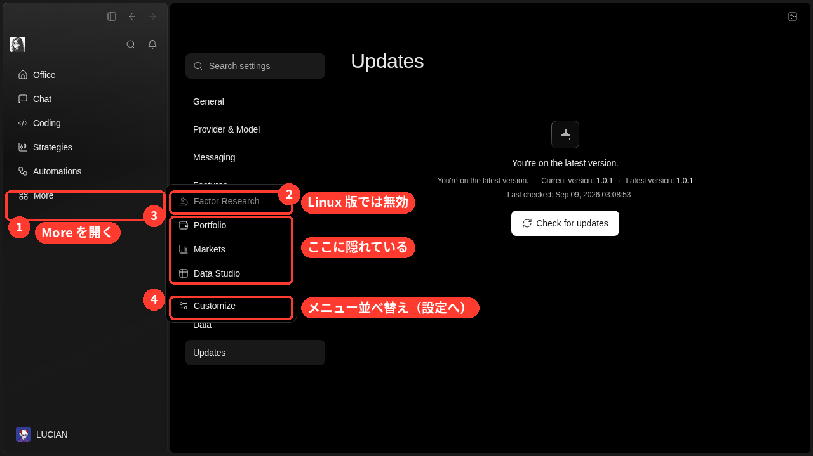
- More を選択
- Factor Research（Linux 版では無効）
- Portfolio / Markets / Data Studio
- Customize（メニューの並べ替え。設定の General に遷移）
全体を一覧にすると次のとおりです。章番号は本記事内での解説位置を示します。
| 場所 | 画面 | 何をする画面か | 章 |
|---|---|---|---|
| メインメニュー | Office | 何でも頼める入口。テンプレートつき | 3 |
| Chat | 市場の質問に答える。カテゴリ別の質問プリセット、Institution セッション | 3 | |
| Coding | プロジェクトフォルダを指定してコードを書かせる | 6 | |
| Strategies | 戦略の作成（Strategy Studio）、ランキング、購読、Autopilot 運用 | 4 | |
| Automations | 定時実行や監視を自然言語で作る | 5 | |
| More | 下の 4 画面の入口 | 2 | |
| More の中 | Factor Research | Linux 版 1.0.1 では無効 | — |
| Portfolio | 接続ウォレットの残高と稼働中の Autopilot | 6 | |
| Markets | 指数、セクター、騰落ランキング、ウォッチリスト | 6 | |
| Data Studio | ダッシュボードを文章から生成 | 6 | |
| 設定 | 10 項目 | General / Provider & Model / Messaging / Features / Computer control / Sync / Security / Git access / Data / Updates | 7 |
3. 最初に触る 3 画面: Office、Chat、そしてモデルを GPT 6 Astra に切り替える手順
3-1. Chat は質問カテゴリを選ぶところから始めるのが早道
Office とは別に Chat という画面があります。Office が作業全般の入口であるのに対し、Chat は市場についての問答に特化しており、Trending / Stock / Pre-IPO / Crypto / Macro / Sentiment / Learn のカテゴリごとに質問のプリセットが用意されています。「$ETH を動かしている一番もっともらしいシナリオは？」といった質問が 8 ページ分あり、クリックするだけで投げられます。
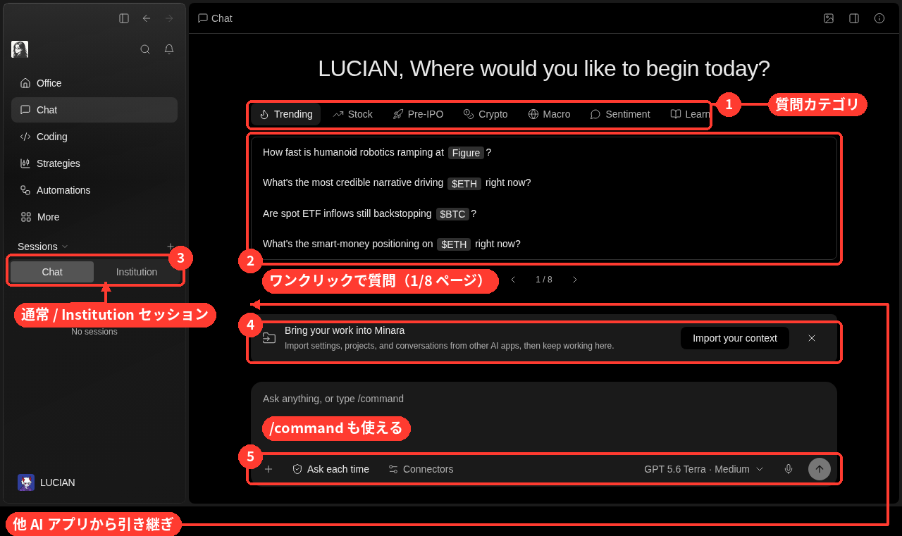
- 質問カテゴリ
- プリセット質問（1/8 ページ）
- 通常セッションと Institution セッション
- 他の AI アプリから設定や会話を取り込む
- 入力欄（「/」でコマンドを呼び出し可能）
3-2. モデルの切り替え手順（入力欄右下から 3 ステップで変更）
ChatGPT アカウントを連携済みなら（連携手順は 7 章の Provider & Model）、チャットの入力欄右下に「GPT 5.6 Terra · Medium」の形式でモデル名と推論強度が常時表示されます。ここが切り替えの入口です。
- 右下のモデル名（例: 「GPT 5.6 Terra · Medium」）をクリックする。Output / Reasoning / Model の 3 項目のメニューが開く
- 「Model」にカーソルを合わせる。左側にモデル一覧が展開する
- 一覧の先頭にある「GPT 6 Astra（gpt-6-astra）」を選択する
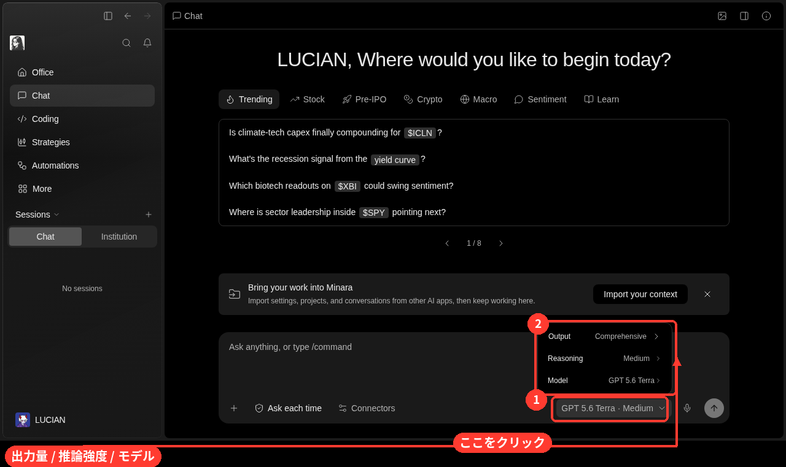
- クリックする箇所
- 出力量 / 推論強度 / モデル
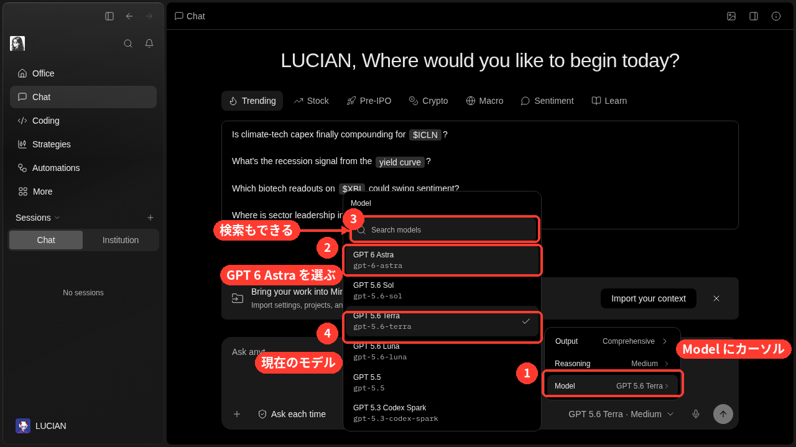
- Model にカーソルを合わせる
- GPT 6 Astra を選択
- モデル名でのインクリメンタル検索に対応
- チェックマークが付いているものが現在選択中のモデル
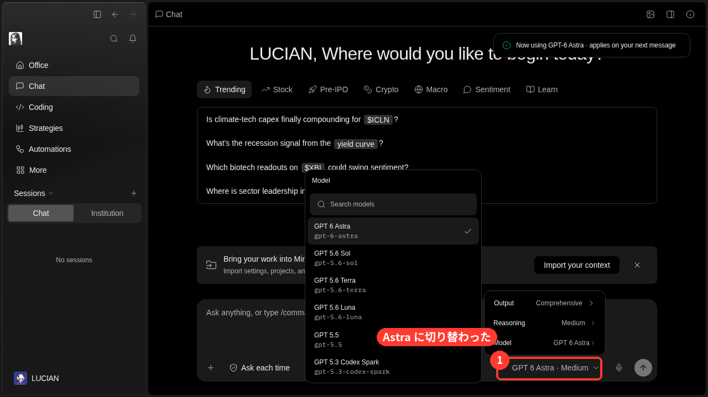
~/.minara/settings.json の defaultModel）にも書き込まれ、次回起動時にも保持されます。- Astra への切り替え完了
4. Strategies: 戦略を作る・探す・走らせる（Autopilot）
Harness の中心機能です。上部に Dashboard / Strategy Studio / Top Strategies / Marketplace の 4 タブがあり、「作る（Studio）→ 探す（Top / Marketplace）→ 走らせる（Dashboard の Autopilot）」の順に見ていくと全体の構造がつかめます。
4-1. Autopilot の基本設計: 専用ウォレット 1 つに戦略 1 つ、投資上限とドローダウン停止を先に決める
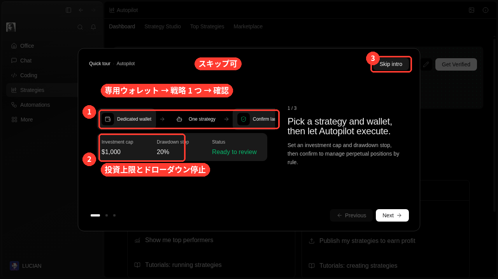
- 専用ウォレット → 戦略 1 つ → 確認
- 投資上限とドローダウン停止
- ツアーはスキップ可能
4-2. Dashboard は自分の作者ページ。稼働状況は内側の Autopilot タブで確認
Dashboard タブを開くと、まず自分の作者カード（アイコン、公開戦略数、Get Verified ボタン）が表示されます。その下に Welcome / Autopilot / My Strategies / Starred の内側タブがあり、稼働中の戦略を確認するのは Autopilot タブです。
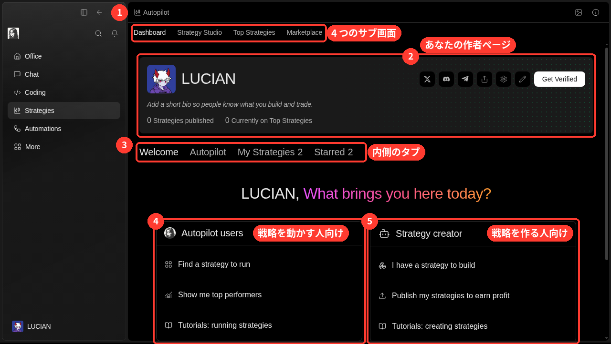
- 4 つのサブ画面
- 作者ページ（X / Discord / Telegram を紐づけて認証を取得可能）
- 内側のタブ
- 戦略を動かす人向け
- 戦略を作る人向け
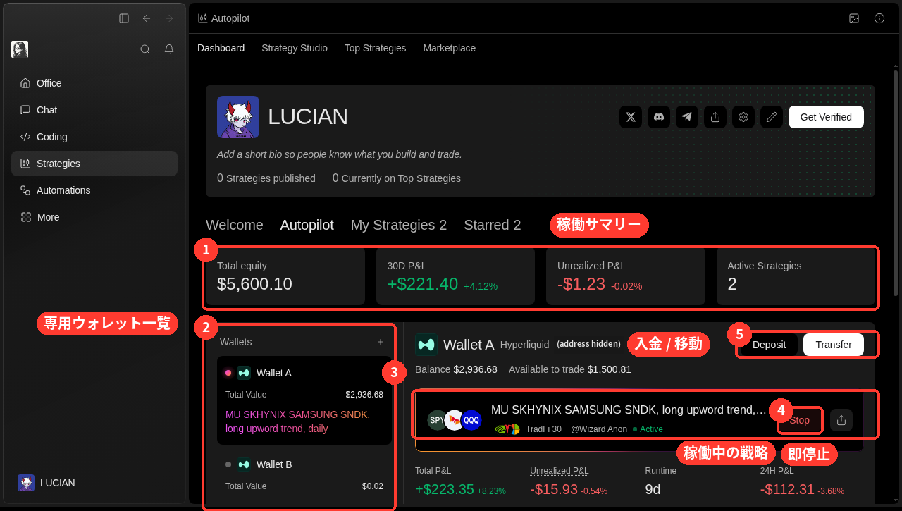
- 稼働サマリー
- 専用ウォレット一覧
- 稼働中の戦略
- Stop で即時停止
- 入金と資金移動
My Strategies には自作の戦略が並びます。今回の環境では BTCUSDT の下書きが 2 本（Wider Stop Revert、RSI Stoch Snapback）あり、どちらもバックテスト前の Draft 状態です。Starred は他人の戦略のブックマークで、購読前の比較に使います。
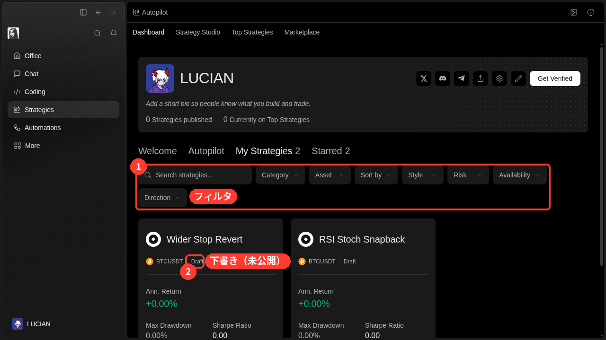
- フィルタ
- Draft は未公開の下書き
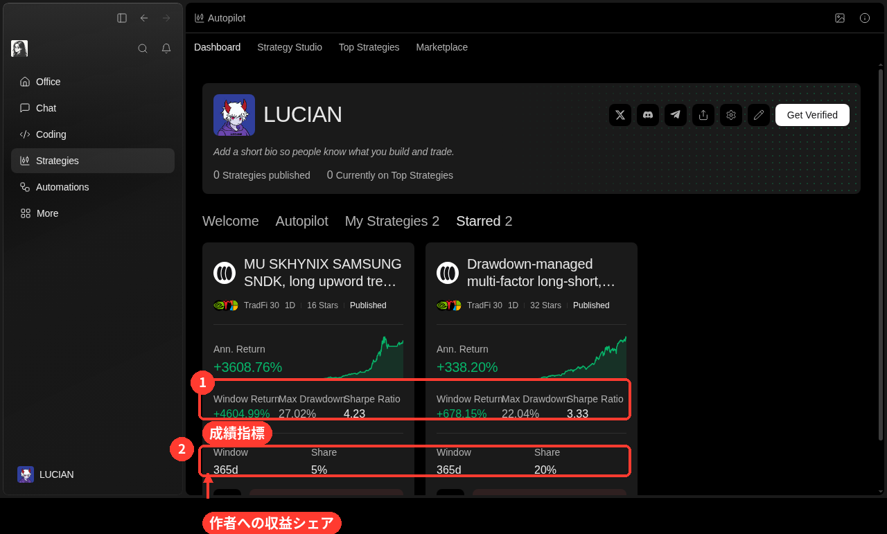
- 成績指標
- 作者への収益シェア
4-3. Strategy Studio: 「文章 → コード → バックテスト → 本番」を 1 画面で回す
戦略を作成する画面です。ツアーの例文は「Buy BTC when hourly RSI falls below 30; sell above 70.」で、これを Describe 欄に入力するとエージェントが売買ルールをコード化し、バックテストまで進めます。時系列（Time-series: 1 銘柄の売買タイミングを扱う）とクロスセクション（Cross-sectional: 複数銘柄の相対評価を扱う）の 2 種類があり、Factor library から既製のファクターも参照できます。
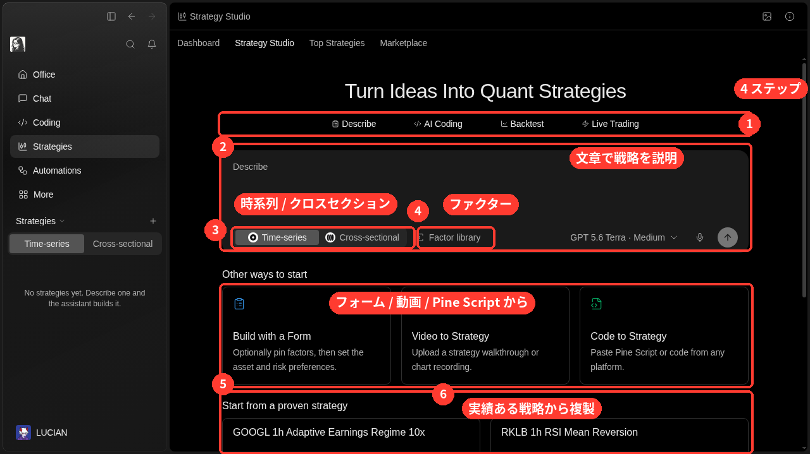
- 4 ステップ
- 文章で戦略を説明
- 時系列 / クロスセクション
- ファクターライブラリ
- フォーム / 動画 / Pine Script からの生成に対応
- 実績ある戦略から複製
4-4. Top Strategies と Marketplace: 「購読可」と「認証作者」で絞り込んで探す
Top Strategies は 90 日ローリングの累積リターンでランキングする画面で、Consistent（安定型）と Aggressive（攻撃型）に分かれます。右側の Popular Creators には Minara Labs（フォロワー 2.6K）、MrTokenAI（1.7K）などの作者が並びます。Marketplace は購読して自分のウォレットで走らせられる戦略の一覧で、カードの「Run」を押すと 4-1 の Autopilot 設定に進みます。
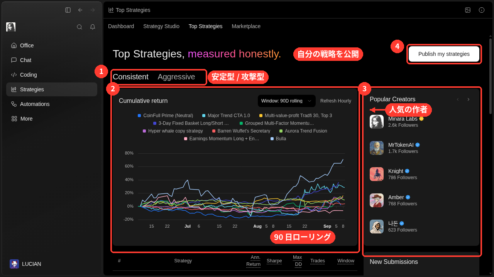
- 安定型 / 攻撃型
- 90 日ローリングの累積リターン
- 人気の作者
- 自分の戦略を公開
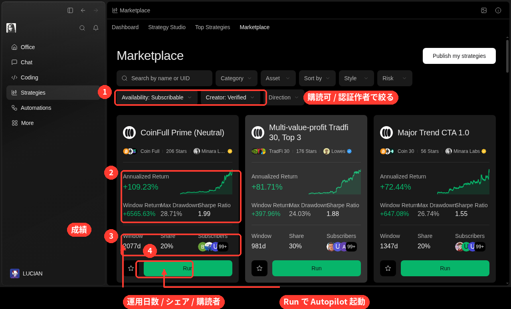
- 購読可・認証作者で絞り込み
- 成績
- 運用日数 / シェア / 購読者数
- Run で Autopilot を起動
5. Automations: 定時レビューや監視を文章で組む
「毎朝ポートフォリオを確認して要約を送って」といった依頼を、トリガー（時刻や条件）→ 処理 → 通知という自動化フローに変換する画面です。ツアーの例文は「Review my watchlist before the market opens and send me a summary.」で、これが「01 Start on time / 02 Review watchlist / 03 Send summary」の 3 段階に分解されます。通知先は 7 章の Messaging で Telegram、Discord、Lark を連携しておきます。
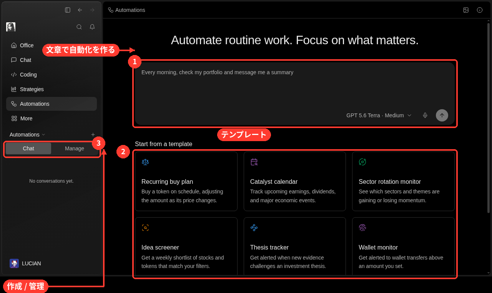
- 文章で自動化を作成
- テンプレート
- 作成（Chat）と管理（Manage）
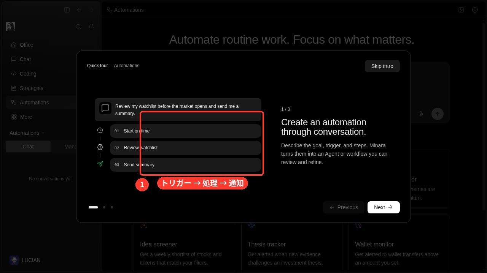
- トリガー → 処理 → 通知
今回の環境ではまだ自動化を作成していないため、実行結果の画面はありません。バックグラウンドで PC を操作させたい場合は、7 章の Computer control で「Allow background tasks to control this computer」を有効にする必要があります。
6. More 配下の機能: Portfolio、Markets、Data Studio、Coding
6-1. Portfolio: 現物とパーペチュアルのウォレットを 1 画面に集約
接続した全ウォレットの合計額と内訳を表示する画面です。今回の環境は 4 ウォレットで合計 $6,118.22。現物（Spot）は EVM と Solana のアドレスを持つ 1 ウォレットに 3 資産で $522.88、パーペチュアル用は Hyperliquid が 2 つと Lighter が 1 つで合計 $5,595.34 です。稼働中の Autopilot はウォレットの行に「Autopilot · Running」として表示され、クリックすると 4-2 の画面に遷移します。
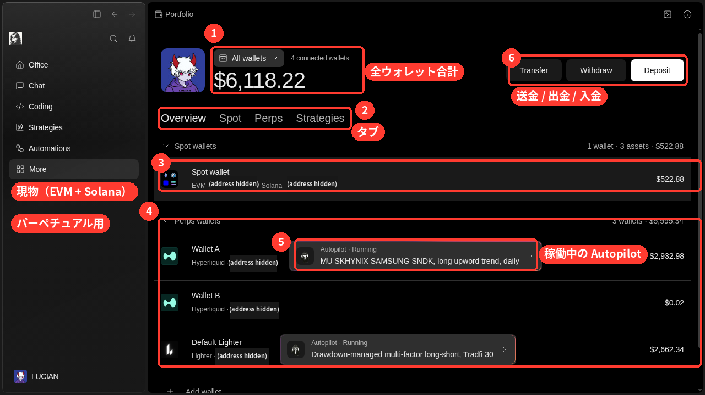
- 全ウォレット合計
- Overview / Spot / Perps / Strategies
- 現物（EVM + Solana）
- パーペチュアル用（Hyperliquid × 2、Lighter × 1）
- 稼働中の Autopilot
- 送金 / 出金 / 入金
6-2. Markets: 指数とセクターを俯瞰。Crypto とウォッチリストはタブ切替
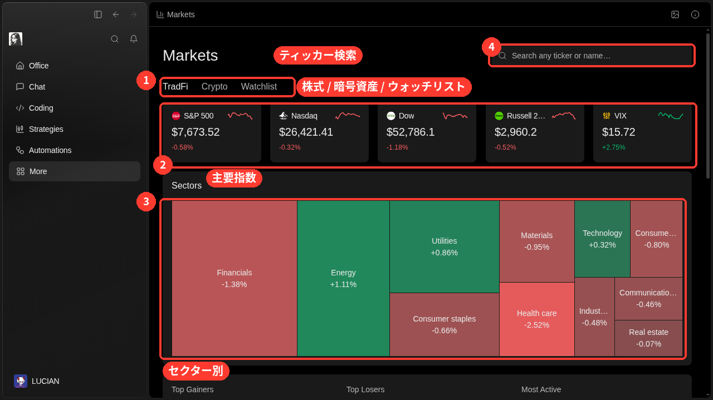
- 株式 / 暗号資産 / ウォッチリスト
- 主要指数
- セクター別
- ティッカー検索
6-3. Data Studio: 「見たいものを書く → 表示 → 会話で修正」でダッシュボードを作る
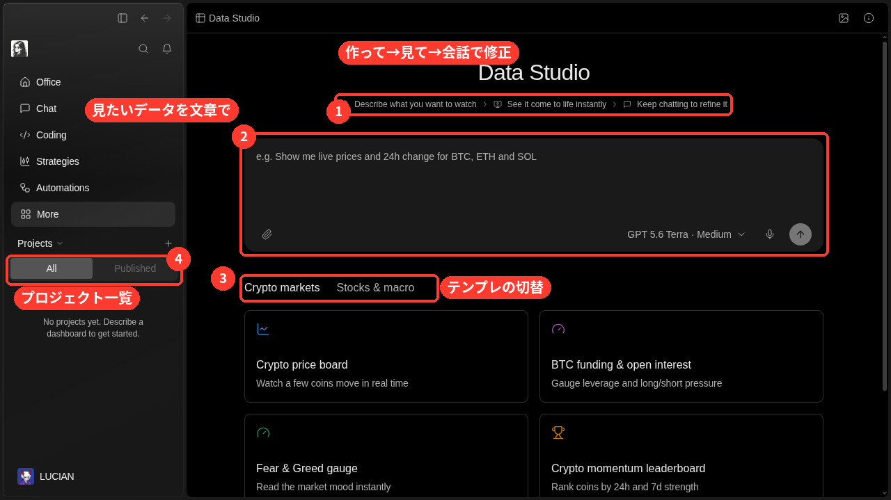
- 作成 → 表示 → 会話で修正
- 見たいデータを文章で指定
- テンプレートの切替
- プロジェクト一覧（All / Published）
6-4. Coding: フォルダを渡してコードを書かせる画面。Git 権限は設定で細かく制御
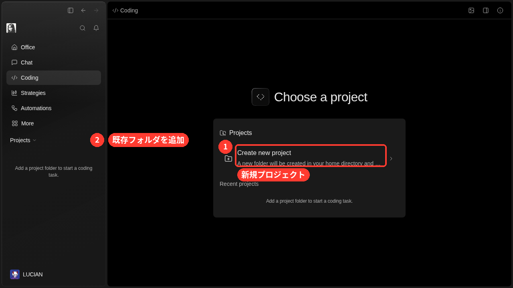
- 新規プロジェクト
- 既存フォルダを追加
7. 設定リファレンス: 目的別の逆引き
設定は More → Customize、または左下のアカウントメニューから開きます。左に 10 項目のカテゴリが並び、上の検索欄で項目名を検索できます。以下は「〜したい → どこを触るか」の逆引き一覧です。
| やりたいこと | 設定項目 | 要点 |
|---|---|---|
| ChatGPT や Claude をエンジンにしたい | Provider & Model | OpenAI は OAuth（ChatGPT のデバイスコード認証）、Anthropic / OpenRouter は API キー |
| Telegram で通知を受けたい | Messaging | Telegram / Discord / Lark(Feishu) を接続 |
| 回答を短くしたい、並列を減らしたい | Features → Preferences | Output、Run tools in parallel、並列ツール上限（既定 16）、サブエージェント数（既定 8 / 8） |
| バックテストの手数料を実態に合わせたい | Features → Backtest costs | Taker / Maker 手数料、スリッページ、レバレッジ、初期資金 |
| 戦略生成を自己学習させたい | Features → Strategy Learning | Skill RL の 2 スイッチ。medium risk、再起動が必要 |
| 画面を見せてアプリを操作させたい | Computer control | Control this computer、バックグラウンド許可、Session runtime（Auto / Cloud / Docker） |
| 別 PC と会話や設定を共有したい | Sync | 自動同期のオン・オフと同期対象の選択 |
| 出金に 2 段階認証をかけたい | Security | 新デバイスのサインインと出金で 6 桁コードを要求 |
| Coding に push させたくない | Git access | 読み取り / コミット / push / ブランチ操作 / 履歴書き換えを個別に許可 |
| エージェントの人格や記憶を編集したい | Data → Workspace | SOUL.md、AGENTS.md、IDENTITY.md、USER.md、MEMORY.md をアプリ内で編集 |
| メモリ使用量やトークン速度を見たい | Data → System resources | CPU / メモリ / ワークスペース容量 / ネットワーク / tok/s |
| バージョンを確認・更新したい | Updates | Check for updates。1.0.1 が最新（2026-09-09） |
7-1. Provider & Model: ChatGPT を OAuth 連携すると「In use」がそちらに移る
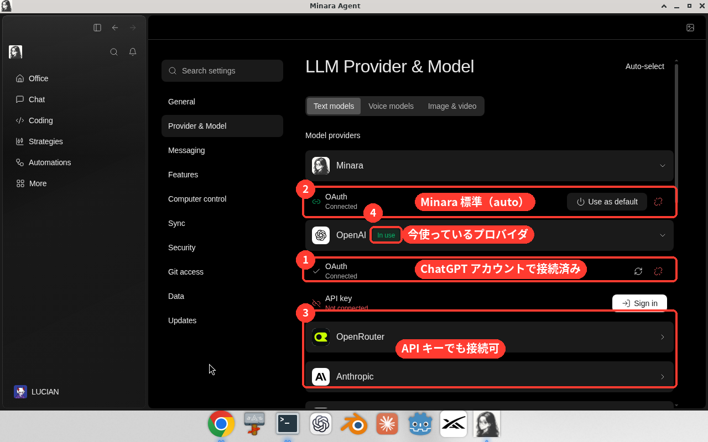
- ChatGPT アカウントで接続済み
- Minara 標準（auto）
- API キーでの接続にも対応
- 現在使用中のプロバイダ
7-2. Features: 並列度とサブエージェント数は既定値で十分。手数料は自分の取引所に合わせて調整
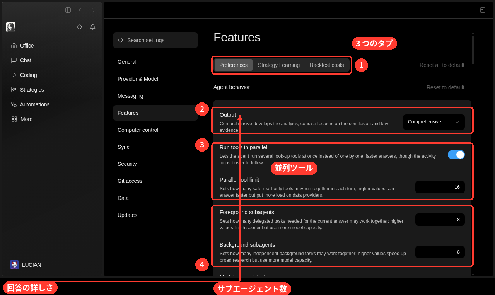
- 3 つのタブ
- 回答の詳しさ
- 並列ツール数
- サブエージェント数
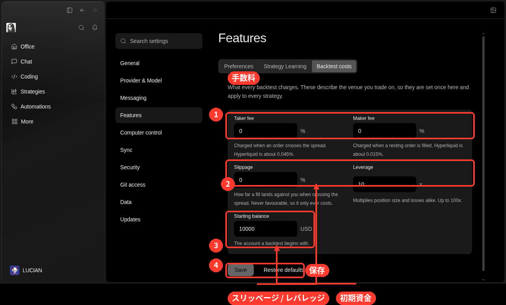
- 手数料
- スリッページ / レバレッジ（最大 100 倍）
- 初期資金
- 保存
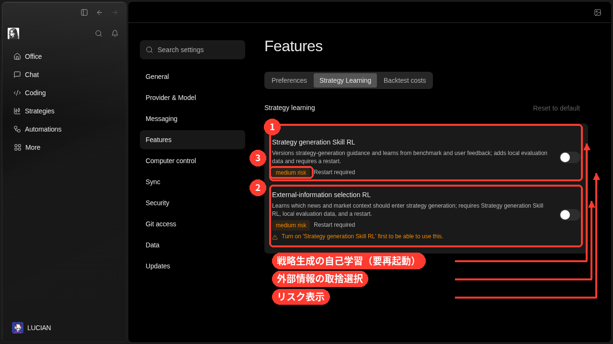
- 戦略生成の自己学習
- 外部情報の取捨選択
- リスク表示
7-3. Computer control: 画面操作の許可と、セッションを Cloud / Docker で動かす設定
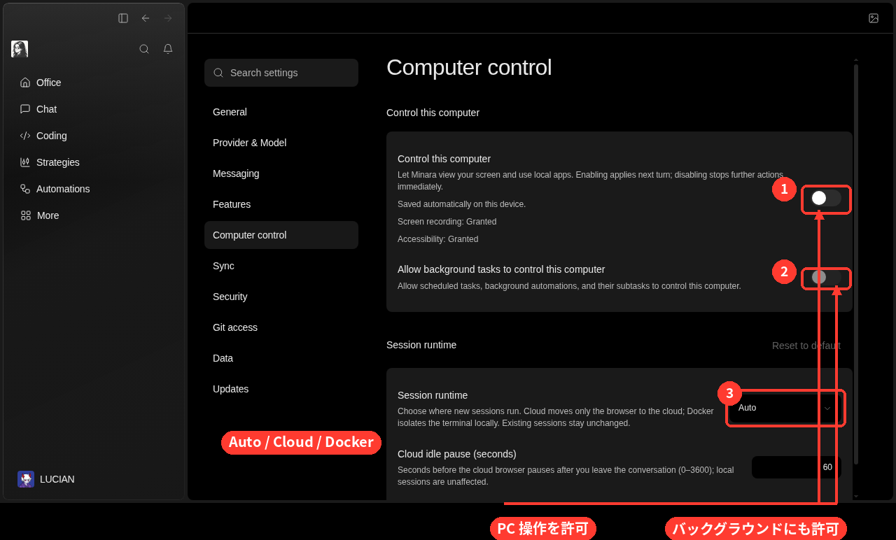
- PC 操作を許可
- バックグラウンドタスクにも許可
- Auto / Cloud / Docker
7-4. Security と Git access: お金とコードの出口を個別に制御
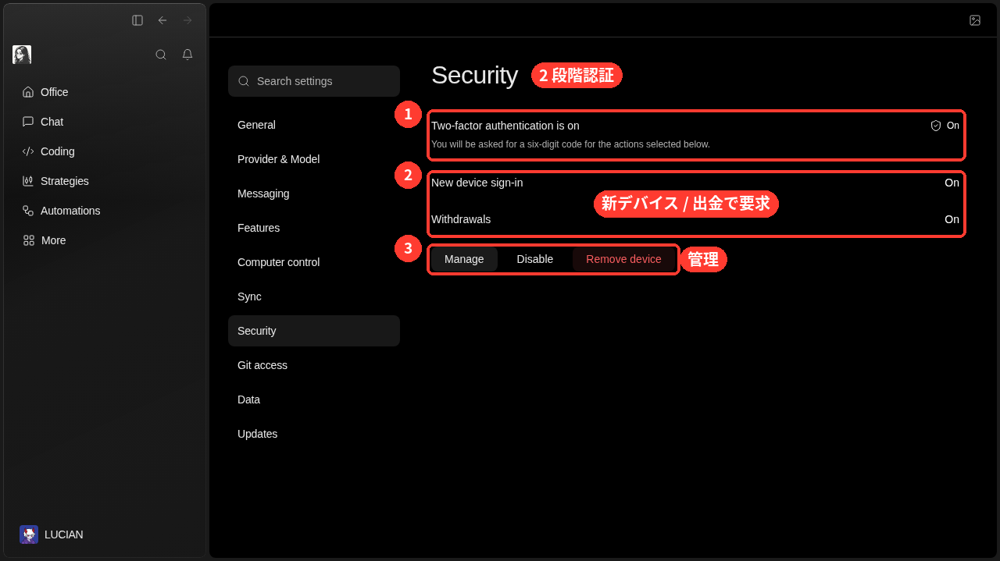
- 2 段階認証
- 新デバイス / 出金で要求
- 管理・無効化・デバイス削除
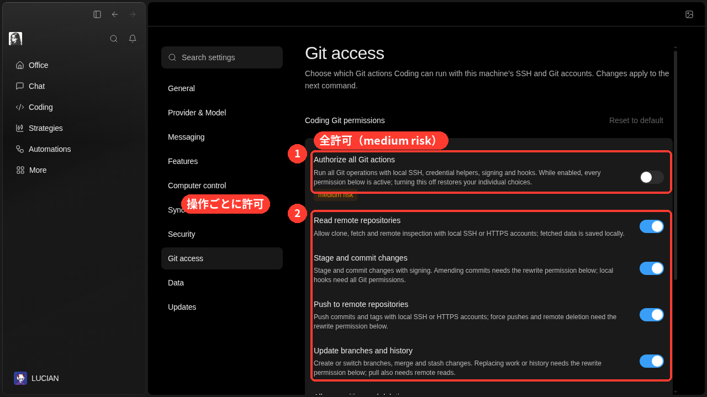
- 全許可（medium risk）
- 操作ごとの許可
7-5. Data: エージェントの「人格ファイル」を直接編集
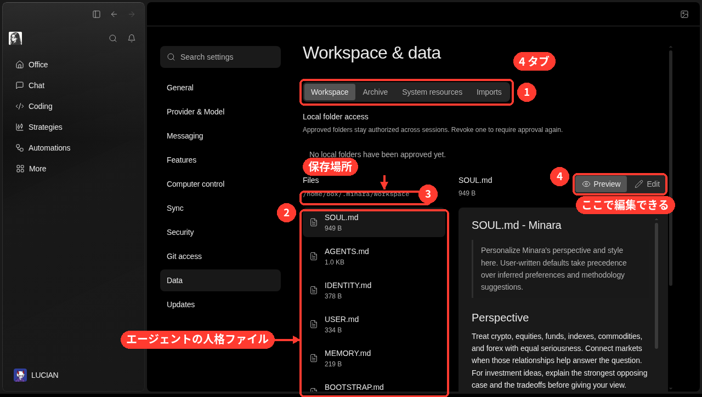
~/.minara/workspace。SOUL.md（視点と文体）、AGENTS.md、IDENTITY.md、USER.md、MEMORY.md、BOOTSTRAP.md が並び、Preview / Edit で中身を確認・書き換えできます。Claude Code の CLAUDE.md に相当する層です。- Workspace / Archive / System resources / Imports
- 人格ファイル
- 保存場所
- ここで編集可能
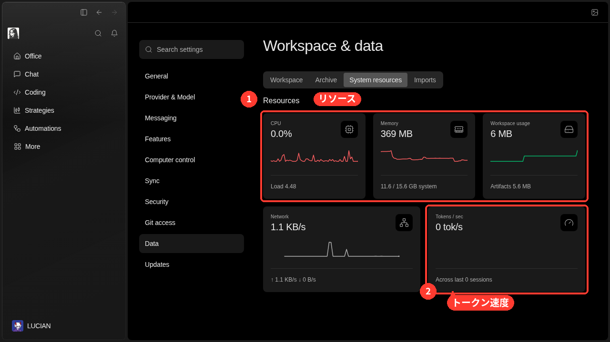
- リソース
- トークン速度
7-6. そのほかの項目
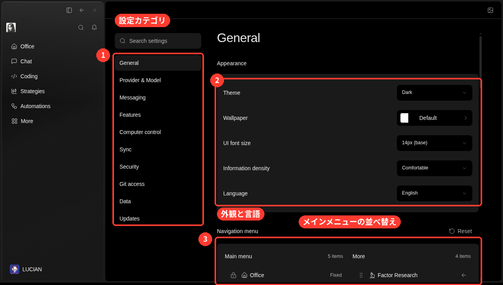
- 設定カテゴリ
- 外観と言語
- メインメニューの並べ替え
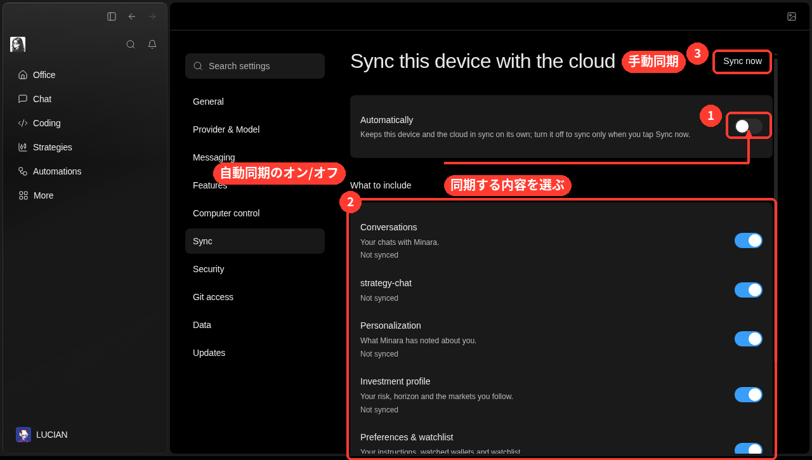
- 自動同期のオン・オフ
- 同期する内容の選択
- 手動同期
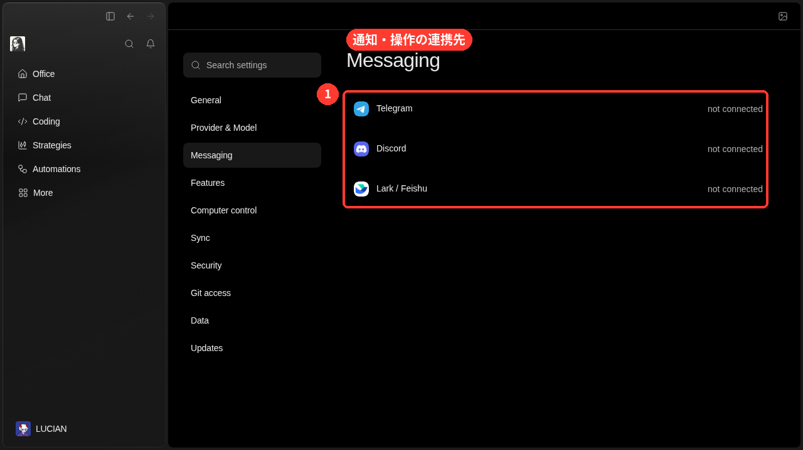
- 通知・操作の連携先
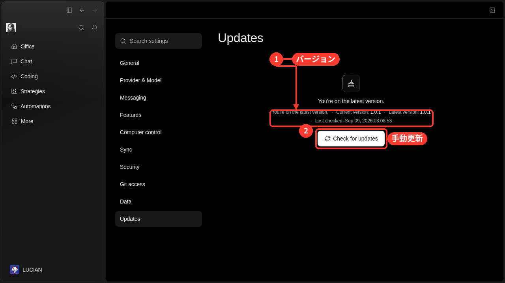
- バージョン
- 手動更新
8. 公式資料で見る Minara Harness（ベンチマーク・Institution・Trading memory）
8-1. ベンチマーク: 財務レポートは強いが、AgentDojo や SkillsBench は横並びに近い
Minara は自社のハーネスを OpenClaw、Hermes、Claude Code の 3 つと比較したベンチマーク結果を公開しています。GPT-5.6 Luna Pro、DeepSeek V4 Flash、Qwen 3.7 Flash という 3 つのベースモデルの上に各ハーネスを乗せ、6 種類のベンチマークで採点する形式です。
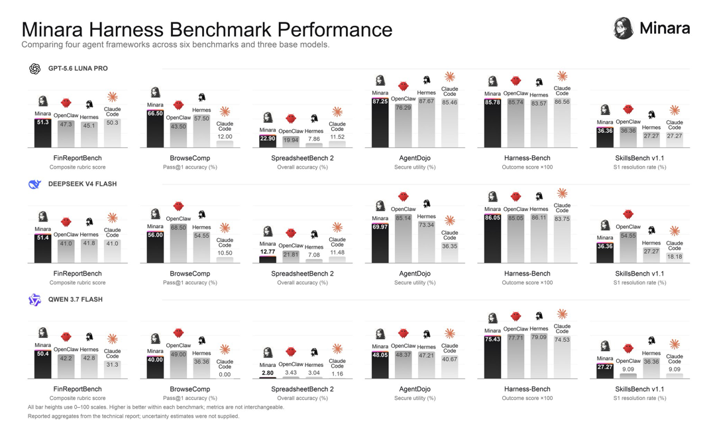
公式ベンチマークが強調しているのは「財務レポートに強い」という 1 点です。それ以外のベンチマークは他フレームワークと拮抗しているか、ベースモデルによって順位が入れ替わります。数字を見る際は、どのベンチマークの話かを確認したうえで受け取るのが安全です。
8-2. Institution モード: 13 エージェントの Roundtable（未検証・Mac 版）
3 章で触れた Chat の Institution セッションについて、今回の Linux 1.0.1 環境ではセッションを作成しておらず未検証のままです。macOS 版の公式画像には、Institution を開いたときの様子が写っています。
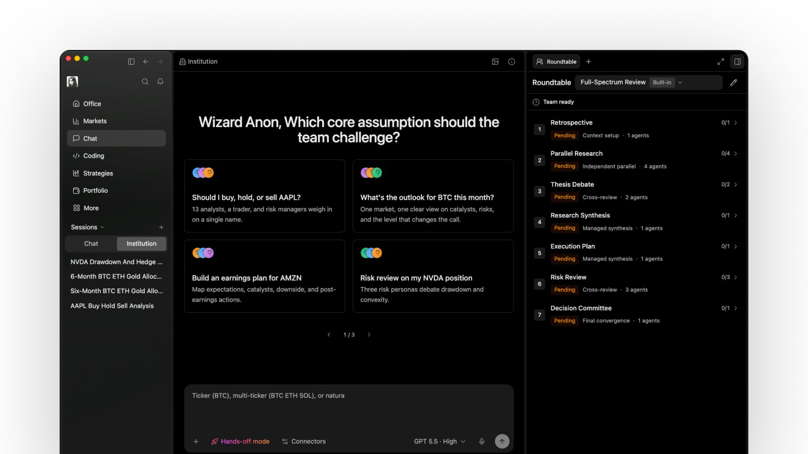
右ペインには「Roundtable — Full-Spectrum Review（Built-in）」として、合計 13 エージェントが 7 段階に分かれて動作する様子が表示されています。
- Retrospective（Context setup、1 エージェント）
- Parallel Research（Independent parallel、4 エージェント）
- Thesis Debate（Cross-review、2 エージェント）
- Research Synthesis（Managed synthesis、1 エージェント）
- Execution Plan（Managed synthesis、1 エージェント）
- Risk Review（Cross-review、3 エージェント）
- Decision Committee（Final convergence、1 エージェント）
公式の説明を訳すと、「あなたの研究に AI エージェントのチームを配置する。専門家が機会を調査し、想定を検証し、リスクをレビューする。情報源や意見の相違を追跡し、証拠が最終報告書をどう形作るかを確認できる」というものです。実際に Linux 1.0.1 で Institution セッションを作成し、Roundtable を最後まで走らせた記録はまだないため、この 7 段階が Linux 版でも同じ構成で表示されるかは今回確認できていません。
8-3. Trading memory & learning: Mac 版のパーソナライズ設定は Linux 1.0.1 にはまだない
7 章で見た Linux 1.0.1 の設定は General から Updates まで 10 項目で、パーソナライズ専用のカテゴリは含まれていません。macOS 版の公式画像には、Personalization の中に「Trading memory & learning」という項目があり、Linux 版より一歩先を行く画面に見えます。
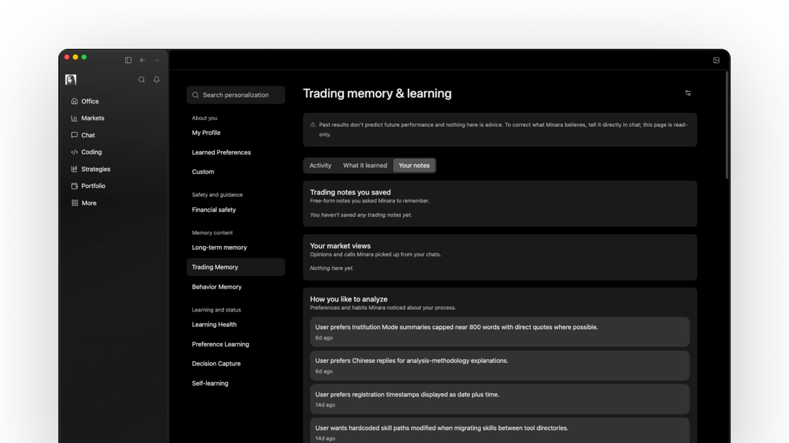
Linux 1.0.1 側で近い役割を持つのは、7-5 で紹介した Data → Workspace の SOUL.md、AGENTS.md、USER.md、MEMORY.md です。こちらはエージェントの視点や行動指針をテキストファイルとして直接編集する仕組みであり、Mac 版の Trading memory のように「学習した内容を項目ごとに一覧で見る」画面ではありません。同じ「記憶と学習」という役割を、Linux 版はファイル編集で、Mac 版は専用の設定画面で扱っているという違いです。
9. Linux（Docker）で動かすときの注意点
.deb をインストールすると /opt/Minara/Minara が本体で、/usr/bin/Minara にリンクが張られます（npm の minara とは大文字小文字で区別されるため衝突しません）。通常の Linux デスクトップであればメニューから起動するだけで済みますが、Docker コンテナ内で動かした今回は 2 つの問題に遭遇しました。
1 つ目はログイン直後に画面が真っ白になる症状です。コンテナの /dev/shm が 64 MB しかなく、レンダラーが JS のチャンクを読み込む途中で net::ERR_INSUFFICIENT_RESOURCES を出して落ちていました。--disable-gpu では解決せず、--disable-dev-shm-usage で解決します。2 つ目はサンドボックス用のユーザー名前空間がない環境で、--no-sandbox が必要です。この 2 つを加えた起動スクリプトは次のとおりです。
#!/usr/bin/env bash
export DISPLAY="${DISPLAY:-:0}"
exec /opt/Minara/Minara --no-sandbox --disable-dev-shm-usage "$@"
ホスト上の通常のデスクトップ Linux でこの 2 つの起動オプションが必要かどうかは未検証です（※/dev/shm が数 GB ある通常環境では不要と考えられます）。もう 1 点、Linux 版 1.0.1 では More メニューの Factor Research が灰色表示で開けません。macOS 版の紹介記事にある機能が見当たらないときは、まずここを疑ってください。
10. 用語集と参照先
| 用語 | 意味 |
|---|---|
| Harness（ハーネス、実行基盤） | AI モデルを実作業に使うための実行基盤。ツール、権限、記憶、UI をまとめたもの。Minara Harness は金融向け |
| Autopilot | 専用ウォレットに戦略を 1 つ割り当て、投資上限とドローダウン停止のルール内で自動売買させる機能 |
| Strategy Studio | 文章、フォーム、動画、コードから売買戦略を生成し、バックテストする画面 |
| Marketplace / Top Strategies | 他の作者の戦略を購読する場所と、そのランキング。購読者の収益の一部（Share）が作者に入る |
| Time-series / Cross-sectional | 時系列戦略は 1 銘柄の売買タイミングを、クロスセクション戦略は複数銘柄の相対評価（ロング・ショート）を扱う |
| Perps（パーペチュアル） | 期限のない先物。Harness では Hyperliquid と Lighter に対応 |
| Drawdown stop | 資産が高値から一定率下がったら戦略を止めるルール |
| OAuth 接続 | API キーを貼らずに、ChatGPT や Minara のアカウントでログインしてモデルを使う方式 |
| SOUL.md / AGENTS.md | エージェントの視点や行動指針を書いたファイル。Claude Code の CLAUDE.md にあたる |
公式の情報源は Minara の X アカウント（Harness の発表ポスト）と、Claude Code 向けスキルを配布している GitHub リポジトリ Minara-AI/minara-skills です。この記事でまだ実機検証していない画面（Institution セッションの実行、Automations の実行結果、Cloud ランタイム）は、Linux で確認でき次第、追記する予定です。